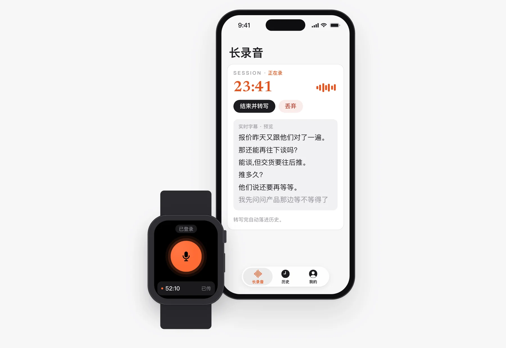

想事情的时候,说出来比写下来快得多。
比起打字和手写,说话让思考和记录同时发生,想法不会在敲键盘时丢掉。
免费 · macOS 26 及以上 · M 系列芯片
现在能下载的是 Mac 版。在手机上,可以先粘一句平时说的话,看它改成什么样 →
按一下右 ⌘ 开始,再按一下结束。
左边打字:打一半,删掉,重打。右边说话:说完再按一下,整句出现在光标处。
打开提示词技能,对 AI 工具想到哪说到哪,落下的提示词去掉口头禅、拆好条,限制原样保留。
右 ⌘ 是听写,够你用很久。另外三个,用到再学。
按一下开始,再按一下停。按住说、说完松开也行。
右 ⌘反过来也行,方向它自己判断。
右 ⌥改好的版本替换原文,代码也行。
右 ⌃问「一英里是多少公里」,光标处出现的是答案。这个键要先在设置里打开。
fn这句不要了,按 Esc。四个键都可以在设置里换成别的键。
录音默认留 30 天,历史一直留,都能在设置里改,也能随时删掉。
登录后,把你说的话转成文字、再把文字理顺时,这一句会交给帮我们做识别和文字处理的服务商,处理完回到你这里。我们自己不留你说的原文,也不卖你的数据。
打开「参考屏幕上的文字纠正专名」后,开始说话时它会看一眼当前窗口里的文字,好把人名和术语写对。它不截屏,读到的字不会存在你的设备上。登录后,这些字会和这一句一起交给服务商处理。新装默认关,要用在设置里打开。
地铁里信号断了,它换个方式接着认,录音照样存着。这时候慢一些,中英夹着说没那么准。联网以后,可以在历史里再识别一遍。
每一句都有录音。在历史里重新识别,或者直接改字。改过的字,以后识别时会参照。
麦克风没收到声音,或者翻译没成,屏幕上当场告诉你,窗口里不写任何东西。
开长录音,录音页里说一句出一句,网课、线上会议、外语会议都能用。录完,完整转写进历史,按说话人分段,谁说的分得清。用你自己的识别服务密钥时,字幕还能浮在所有窗口上面,全屏网课时盖在画面上;外语会议打开第二栏看译文。字幕只是预览,底下的录音一直在录。
登录后,可以免费试录一次,最长 3 分钟;到时自动停,录下的部分照常保存。想多录,看会员订阅 →
边说边出字,说的时候就看得到。
一句话里中文夹着英文,不用切换。
登录后,常说的人名、术语加进词典,认和理顺时都会参考。
网络断了,或者这周的额度用完了,它会换个方式接着认,说过的话不会丢。
不登录也能用,不限次数,一次认一种语言。中英混着说和理顺要登录,额度用完时照原话输出。登录只要填邮箱,不用密码。
会议室里、图书馆里,还是得打字。Murmur 带一个拼音输入法,和听写共用一本词典:你教它听对的名字,打字时出现在候选里;你打过的词,说话时它也认得。
开会或者采访,点一下手表就开始录,录完在手机上看完整转写。iPhone 和 Apple Watch 版本即将推出。

系统听写把你说的话逐字写下来。Murmur 把它整理成通顺的书面文字:去掉口头禅,理顺语序,补上标点,一句话里中英混说也能写对。整理需要登录。
登录后每周 2000 字,听写和理顺共用。这周的额度用完后仍可听写,写下的是你的原话,不再理顺。登录只要填邮箱,不用密码。
理顺句子、去掉口头禅、一句话里中英混说、翻译、提问,以及按你说的改写选中的文字。这些能力使用登录后的免费额度。不登录时,一次识别一种语言,写下的是你说的原话。
文字写在当前光标所在的位置,不需要为单个应用安装插件。邮件、聊天、终端和代码编辑器里都可以用。写入依靠 macOS 的辅助功能权限,第一次打开时会请求。
中文和英文。登录后,同一句话里可以中英混说,不需要切换,夹在中文里的英文词照英文写出。不登录时,一次识别一种语言。
录音和历史保存在你自己的设备上,录音默认留 30 天,历史一直留,都可以在设置里修改或随时删除。登录后,你说的这一句会交给服务商转成文字并理顺,我们不保存原文,也不出售你的数据。读取窗口文字的方式、服务商所在国家和保留期限,写在隐私页。
需要 M 系列芯片、macOS 26 或更高版本,安装包约 45 MB。Intel 芯片的 Mac 和更早的 macOS 暂不支持。Windows 版在测试,预计两个月内发布。
免费 · macOS 26 及以上 · M 系列芯片 · 约 45 MB
填邮箱就能登录,不用密码。去登录 →
用 Intel Mac 或更早的 macOS?发封邮件到 support@day1aifitness.com,支持以后我们回信。
解压后把 Murmur 拖进「应用程序」。第一次打开会请求麦克风和辅助功能权限,后者用来把字写进光标处。
从 0.52 升级:先退出旧版,再把新下载的拖进「应用程序」替换。这一版更新了什么 →
Windows 版正在测试,预计两个月内发布。